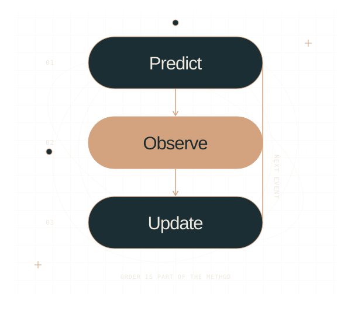

Preserve the methods.
The release adapts generic baseline algorithms and evaluation methods from the existing personal ATLAS lab: learner simulation, temporal holdout, predict-before-observe replay, and learner-block bootstrap.
INDEPENDENT ENGINEERING / RESEARCH PROTOTYPE
A controlled test bench
for learner models.
Synthetic learners, familiar baselines, and an evaluation sequence that makes one question explicit: what could the model know before the next outcome?
Inside the method
Evaluating a learner model involves more than choosing an algorithm. Event order, data separation, and the way uncertainty is estimated all shape what a comparison can mean.
ATLAS brings those choices into a small, standalone lab. The release adapts generic model and evaluation code from my existing personal ATLAS lab, adds neutral synthetic inputs, and exposes the workflow through a Python command-line interface.
The focus is an inspectable evaluation workflow, with simulation assumptions visible.
The sequence is part of the experiment. Each stage has a specific job.
CONSTRUCT THE INPUT
Use synthetic events in three neutral categories (pattern, sequence, and allocation) so the lab can run independently of its original application.
RESPECT THE TIMELINE
Replay events in order. Record each prediction before the model observes that event’s outcome, then let the model update for what comes next.
SEPARATE THE EVALUATION
Use a temporal prefix/tail holdout: earlier events provide history, and later events are evaluated in order. Each prediction is recorded before that event updates the model.
KEEP HISTORIES TOGETHER
Resample learner blocks when estimating uncertainty, keeping the events within a learner history together.
READ THIS AS A description of the evaluation design. No benchmark results or model ranking are asserted here.
The CLI writes aggregate reports in report.json and report.md.
python -m atlas_research_lab --output ./results --learners 20 --attempts 40 --seed 7 --bootstrap 100Six model implementations adapted from the existing lab form the generic core. They provide different reference points for studying predictions on synthetic histories.
| MODEL | REFERENCE / FAMILY |
|---|---|
| BaseRate | Rate baseline |
| Oracle | Simulator-probability reference |
| ItemOnly | Item-level baseline |
| BKT | Bayesian knowledge tracing |
| EloIRT | Elo-style model |
| PFA | PFA-inspired model |
The release focuses on the generic Python core. Deep knowledge tracing and GPU experiments are outside its scope.
The original lab and the standalone release are related, but they are not the same artifact.
The release adapts generic baseline algorithms and evaluation methods from the existing personal ATLAS lab: learner simulation, temporal holdout, predict-before-observe replay, and learner-block bootstrap.
AI-assisted work separated the reusable core, introduced neutral synthetic fixtures, and added the standalone CLI. This release work is distinct from the pre-existing model implementations.
Synthetic learners only. The release excludes game-specific mastery and pacing policies, game assets and content, original game-derived datasets and conformance fixtures, real learner records, and employer information. It remains an independent engineering/research prototype, not a peer-reviewed study of human learning.
The standalone Python package is available under the MIT license. The public source includes the synthetic workflow and its tests, with the model and simulation assumptions available for inspection.
Explore the source on GitHub
The source also passed GitHub CI on Python 3.10, 3.12 and 3.14. These checks cover the standalone artifact; they do not establish learning effectiveness, production adoption, or model superiority.